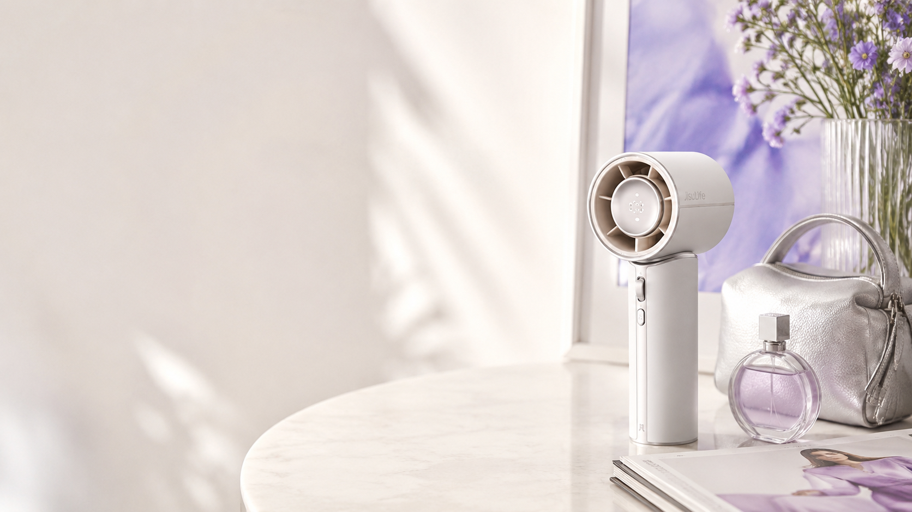
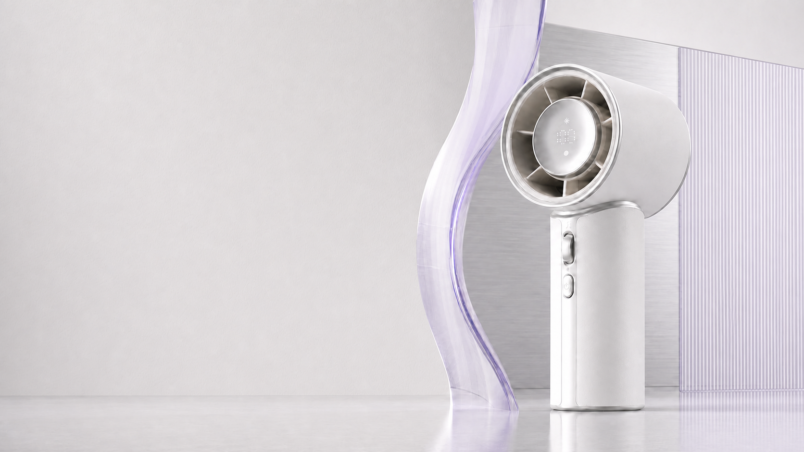
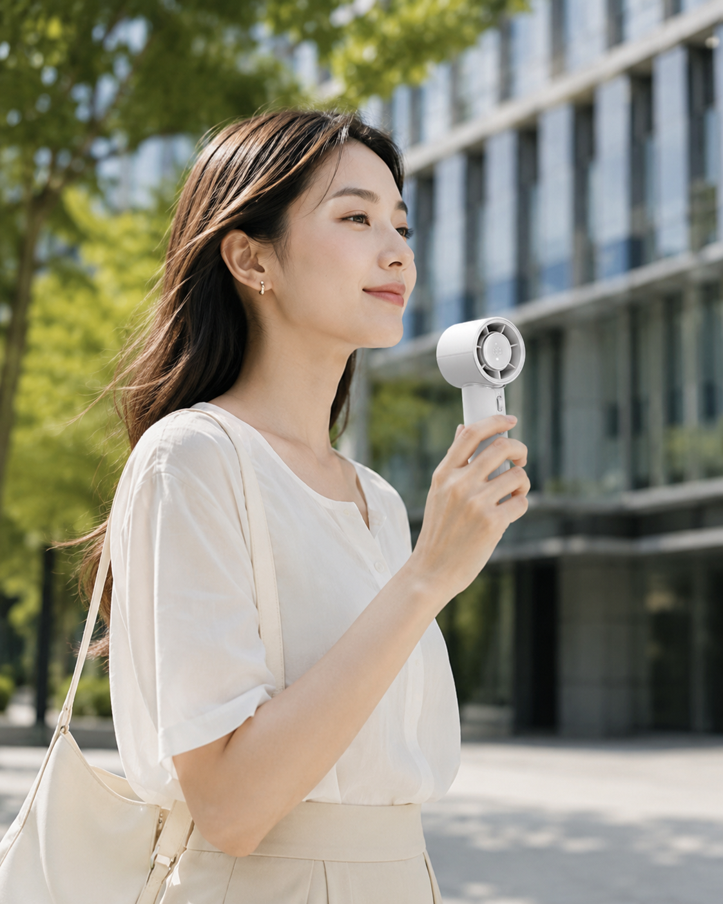
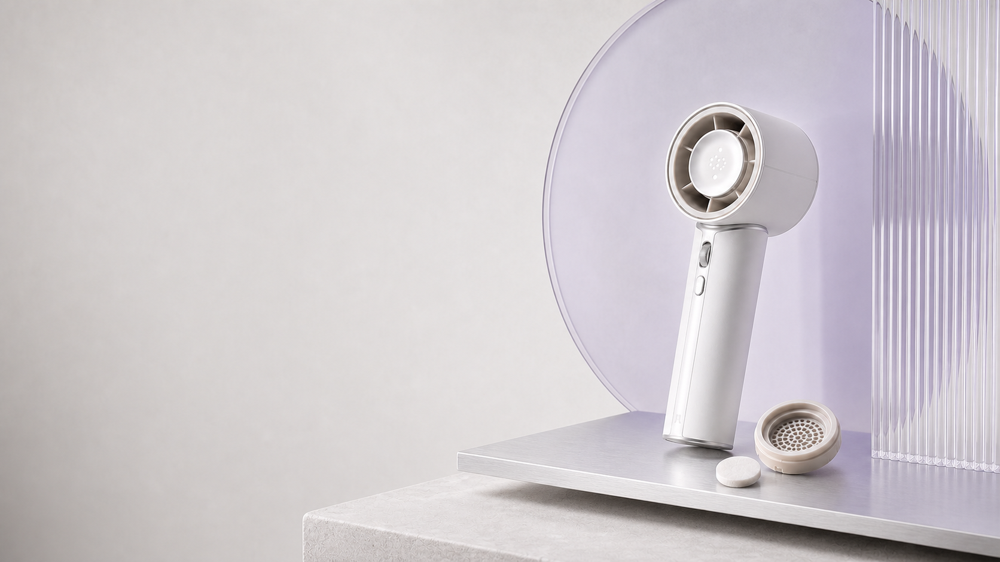
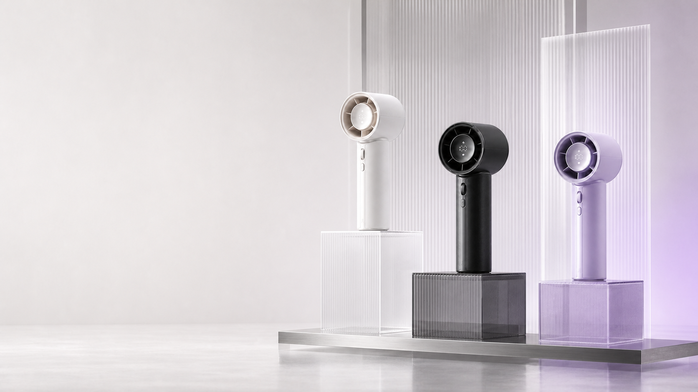

滚轮连续调节，让每一档都刚刚好。
JISULIFE · PRO1 MINI
轻盈，
生风。
百档风力与 30 小时续航，
收进一只手掌的轻奢轮廓。

DESIGNED TO MOVE
圆润的涡轮机头、克制的金属色泽与一手可握的比例，
让随身清凉成为日常造型的一部分。

01 / PERFORMANCE
清爽送风，为日常通勤留出舒适余量。

SUMMER COMMUTE · DAILY COOLBEAUTY IN MOTION
从通勤到旅行，轻巧机身自然融入随身物件。拿起它，不需要改变你的节奏。

02 / AROMA
一吸即合，轻松装卸。清凉吹过，也留下克制、淡淡的气息。
扩香模式：香片随气流释放淡雅气息
滚轮连续调节，让每一档都刚刚好。
从上班到夜晚，减少反复充电的打断。
小巧比例，轻松放进通勤包与旅行袋。

03 / COLORWAYS
从清透星光白，到沉静丝绒黑，还有一抹冷雾紫。
清透、安静，像晨光落在银器上。